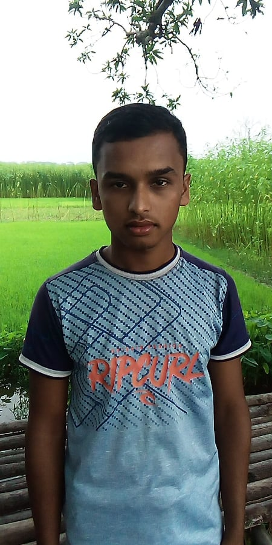
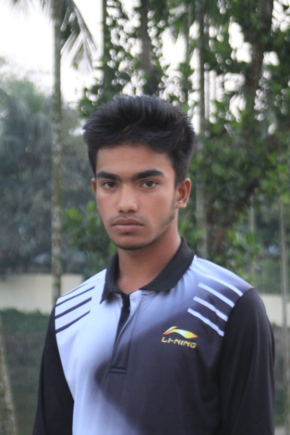

সাংগঠনিক কমিটি
তুহিন আহাম্মেদ অত্যন্ত ভাল চরিত্রের,স্বহৃদয়বান ,উদার মনের মানুষ।সমাজের সব শ্রেণীর মানুষ তাকে ভালবাসে। সমাজের সবার সাথে তার ভাল সম্পর্ক বজায় আছে।তিনি কখনো ধনি-গড়িব বিভেদ করেন না।ধনি-গড়িব সবাইকে তিনি সমান দৃষ্টিতে দেখেন।সমাজে তার কোন বদনাম নাই।তিনি জিনারী কানার বাড়ির বাহারউদ্দিনের ষষ্ঠ সন্তান।

তুহিন আহম্মেদ (সভাপতি)
আব্দুল আহাদ একজন পর-উপকারী উদার মনের মানুষ।মানুষের জন্য তিনি নিবেদিত প্রান। এই ক্লাবের জন্য মারমনিল হবি’র পরই তার আত্নত্যাগ।তিনি নিজের পরিবারের চেয়ে বেশি ক্লাবকে গুরোত্ব দেন।ব্যক্তিগত যত সমস্যাই থাকোক না কেন ক্লাবের সকল কর্ম-কান্ডে তিনি সবার আগে উপস্থিত থাকেন। একবারে নিস্বার্থ একজন মানুষ যা আজকালকার সমাজে পাওয়া যায় না। তিনি ডাকুরিয়া গ্রামের মরহুম শূক্কুর আলীর তৃতীয় সন্তান।
আহাদ (সাধারন সম্পাদক)
থামিম ইকবাল একজন বুদ্ধিমান তরুন।তার মাথার মস্কিষ্ক খুবই ভাল।তিনি অল্পতেই অনেক কিছু বুঝতে পারেন।বড়দের সে যথেষ্ট সম্মান করেন। এবং ছোটদের ভালবাসেন।তার মিষ্ট ব্যবহারে সাবই মুগ্ধ।সে লেখা-পড়ায় ভাল।তিনি সময়ানুবর্তিক একজন মানুষ।তিনি কখনো কথার নড়-চর করেন না ।তিনি জিনারী কানার বাড়ির সিরাজ উদ্দিনের ১ম সন্তান।
থামিম ইকবাল (ক্যশিয়ার)
তিনি দেখতে খুবই সু-দর্শন একজন মানুষ।জ্ঞানে ,শিক্ষায়,মেধায়,ভদ্রতায় ,বুদ্ধিতে তিনি অনন্য।তিনি প্রকৃতি প্রেমী একজন মানুষ। তিনি অতিতি আপ্যায়নে খুবই পারদর্শি।কোন অনুষ্ঠানের আনুষ্ঠানিকতা কিভাবে করতে হয় তা খুব ভাল বুঝেন।তিনি উচ্চ শিক্ষিত একজন মানুষ।তিনি ইংরেজি ভাষায় কথোপকথন করতে পারে।ডাকুরিয়া গ্রামের আবু খায়ের এর ২য় সন্তান।
হৃদয় সরকার(সহ-সভাপতি
হারুন মিয়া জিনারী কানার বাড়ির কবিরের ৪র্থ সন্তান।তিনি ক্লাবের অন্যতম সেরা বোলার।তার বলিংয়ের ভেরিফিকেশনের কারনে বাঘা বাঘ ব্যাটসম্যানরাও পরাস্ত হয়।তিনি ভাল ব্যাটও করে থাকেন।অর্থ্যাৎ তিনি একজন ভাল অলরাইন্ডার। অল্প বয়সে তিনি ভাল বোলার হয়ে ওঠেছেন তার চেষ্ট ও পরিশ্রমের জন্য।
